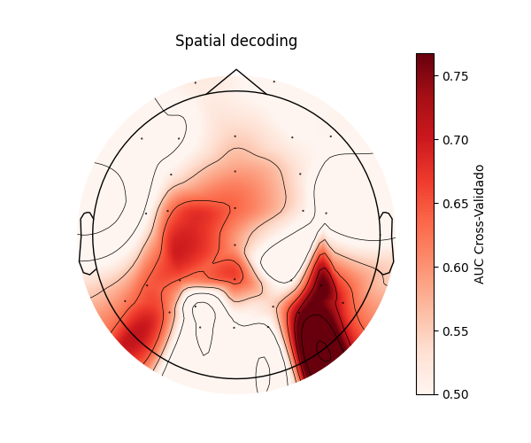
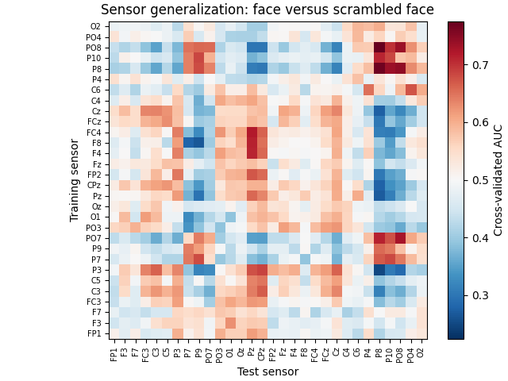
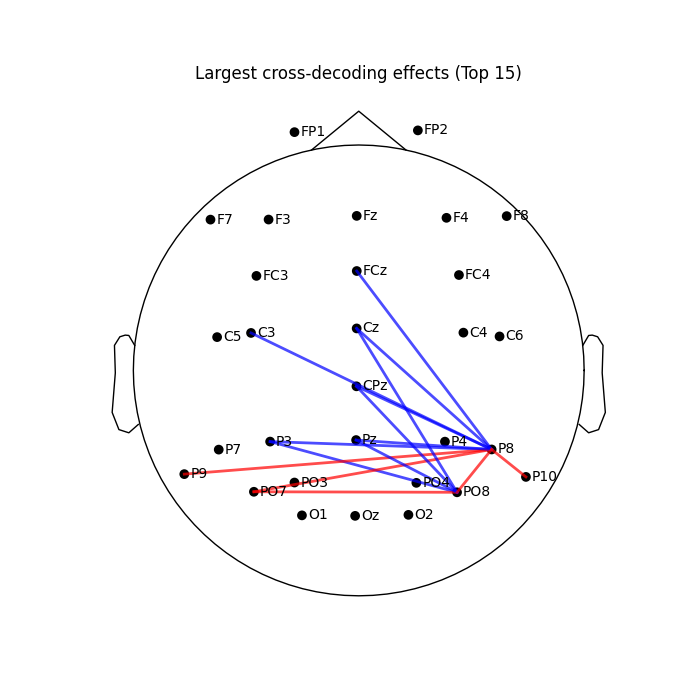
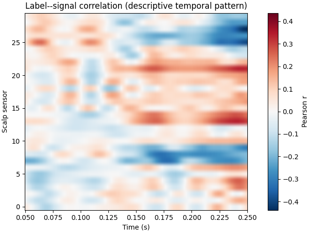
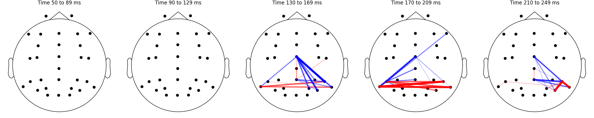

Note
Go to the end to download the full example code.
Generalizing across location (GAL) decoding and TimeGAL#
Traditionally, multi-variate pattern analysis (MVPA) or decoding techniques uses spatial information (features) at every single time-point to train and test classifiers. However, some electrophysiological components are better captured on the time domain than in the spatial one. Therefore, this tutorial focus on such temporal information, serving as features to train our classifier models. As a result, a topographic representation of decoding rates is obtained, depicting the location of brain areas involved in the analyzed neural component.
Furthermore, spatial decoding allows to train classifier models in one channel and estimate at every other channel. The matrix then shows where a decodable temporal pattern transfers across the sensor array. The Generalization across Location (GAL) procedure computes a channel by channel matrix revealing the generalization between brain areas. Then, a connectivity plot can be used to represent the cross-decoding generalization patterns. This cross-decoding technique is analogous to the temporal generalization by King & Dehaene (temporal generalization example ), yet in orthogonal direction. Instead of showing the temporal sustainability of a neural representation, it shows the spatial displacement of the neural representation across brain areas.
For epochs with shape trials x sensors x time, temporal generalization uses
time as the iteration axis and sensors as features. GAL reverses those roles: sensor
locations are the iteration axis and time samples are features. Both analyses use
mne.decoding.GeneralizingEstimator. Spatial decoding like GAL analysis can be
carried out both at the sensor level (suitable on EEG electrodes) or source level
(cortical vertices or ROI). In the case of using EEG data, it is strongly recommended to
apply laplacian correction to avoid spurious cross-decoding generalization between
proximal areas due to volume conductance. In this tutorial no Laplacian has been applied
into data to keep it short and focus on decoding.
This tutorial uses the N170 face-perception task from the ERP CORE dataset. For the sake of fast computation, only one subject is presented in this tutorial. We contrast faces with cars and use 30 EEG sensors. Therefore, results shown here lies only in one subject, but further statistical analysis is required across subjects to estimate which GAL links or topographic accuracies are statistically significant. More information about the TimeGAL methodology can ben consulted in Santos-Mayo et al. <https://doi.org/10.1002/hbm.70152>`_.
# Authors: The MNE-Python contributors.
# License: BSD-3-Clause
# Copyright the MNE-Python contributors.
Download one ERP CORE N170 recording#
ERP CORE is available from NEMAR as a BIDS dataset. We download only the N170 recording from participant 1 (about 94 MB), rather than the complete multi-participant archive. The recording contains 80 face and 80 scrambled face trials.
import matplotlib.pyplot as plt
import numpy as np
import pooch
from sklearn.linear_model import LogisticRegression
from sklearn.model_selection import StratifiedKFold
from sklearn.pipeline import make_pipeline
from sklearn.preprocessing import StandardScaler
import mne
from mne.channels import make_standard_montage
from mne.decoding import GeneralizingEstimator, SlidingEstimator, cross_val_multiscore
from mne.io import read_raw_eeglab
data_dir = mne.datasets.default_path() / "ERP-CORE-N170" / "sub-001" / "eeg"
data_dir.mkdir(parents=True, exist_ok=True)
urls = {
"sub-001_task-N170_eeg.fdt": (
"https://data.nemar.org/nm000132/v1.1.1/sub-001/eeg/sub-001_task-N170_eeg.fdt",
"sha256:08406f3c6b4a869dc8f67c9acc233a91993bae1b04b7dee5bc0521677ed8949b",
),
"sub-001_task-N170_eeg.set": (
"https://data.nemar.org/nm000132/v1.1.1/sub-001/eeg/sub-001_task-N170_eeg.set",
"sha256:9c53dbdc3b469934a5eb6e9f01e59090dd47aeb495b8f21ceca03670991e5b11",
),
"sub-001_task-N170_events.tsv": (
"https://raw.githubusercontent.com/nemarDatasets/nm000132/v1.1.1/"
"sub-001/eeg/sub-001_task-N170_events.tsv",
"sha256:07c87e728d097b0deb05b17d77bbdbd22ef58105111b0b56e659a767b9421e34",
),
}
for fname, (url, known_hash) in urls.items():
pooch.retrieve(url=url, known_hash=known_hash, path=data_dir, fname=fname)
raw = read_raw_eeglab(data_dir / "sub-001_task-N170_eeg.set", preload=True)
Using default location ~/mne_data...
Reading /home/circleci/mne_data/ERP-CORE-N170/sub-001/eeg/sub-001_task-N170_eeg.fdt
Reading 0 ... 699391 = 0.000 ... 682.999 secs...
Prepare the epochs#
The EEGLAB recording labels the three ocular channels as EEG. Mark them as
EOG before re-referencing. We use the standard 10-20 positions associated
with the recorded cap labels for consistent sensor-space plots. All 30 scalp
electrodes enter the analysis; picks=\"eeg\" below removes only EOG.
Finally, X (trials, sensors, time) and y (labels) are extracted for decoding.
raw.set_channel_types(
{name: "eog" for name in ("HEOG_left", "HEOG_right", "VEOG_lower")}
)
raw.set_montage(make_standard_montage("colin27_1020"), match_case=False)
raw.filter(0.1, 30.0, fir_design="firwin")
raw.set_eeg_reference(projection=True).apply_proj()
events_tsv = np.genfromtxt(
data_dir / "sub-001_task-N170_events.tsv",
delimiter="\t",
names=True,
dtype=None,
encoding="utf-8",
)
is_target_trial = (events_tsv["trial_type"] == "stimulus") & np.isin(
events_tsv["event_type"], ("face", "scrambled_face")
)
events_tsv = events_tsv[is_target_trial]
event_id = dict(face=1, scrambled_face=2)
events = np.column_stack(
(
events_tsv["sample"],
np.zeros(len(events_tsv), dtype=int),
np.where(events_tsv["event_type"] == "face", 1, 2),
)
).astype(int)
epochs = mne.Epochs(
raw,
events,
event_id=event_id,
tmin=-0.2,
tmax=0.6,
baseline=(None, 0),
picks="eeg",
preload=True,
verbose=False,
)
feature_epochs = epochs.copy().crop(0.05, 0.25)
X = feature_epochs.get_data()
y = epochs.events[:, 2] == event_id["face"]
print(
"Sensor-generalization input: "
f"{X.shape[0]} trials, {X.shape[1]} scalp sensors, {X.shape[2]} times"
)
Filtering raw data in 1 contiguous segment
Setting up band-pass filter from 0.1 - 30 Hz
FIR filter parameters
---------------------
Designing a one-pass, zero-phase, non-causal bandpass filter:
- Windowed time-domain design (firwin) method
- Hamming window with 0.0194 passband ripple and 53 dB stopband attenuation
- Lower passband edge: 0.10
- Lower transition bandwidth: 0.10 Hz (-6 dB cutoff frequency: 0.05 Hz)
- Upper passband edge: 30.00 Hz
- Upper transition bandwidth: 7.50 Hz (-6 dB cutoff frequency: 33.75 Hz)
- Filter length: 33793 samples (33.001 s)
EEG channel type selected for re-referencing
Adding average EEG reference projection.
1 projection items deactivated
Average reference projection was added, but has not been applied yet. Use the apply_proj method to apply it.
Created an SSP operator (subspace dimension = 1)
1 projection items activated
SSP projectors applied...
Sensor-generalization input: 160 trials, 30 scalp sensors, 206 times
Space-resolved decoding uses time as features#
The main difference between time-resolved and space-resolved decoding lies on
what information is used as features (information) or iteration axis (sliding).
Here, we introduce the space-resolved decoding where information from each
sensor is used in the analysis, utilizing all the time points as features. We
use the SlidingEstimator function and the outcome can be display using a
topographic map. Importantly, GeneralizingEstimator
treats the final dimension (usually time) as the iteration axis by default.
axis=1 selects sensors instead of time, thus changing from temporal
decoding to spatial decoding.
classifier = make_pipeline(
StandardScaler(), LogisticRegression(solver="liblinear", random_state=0)
)
cv = StratifiedKFold(n_splits=3, shuffle=True, random_state=0)
space_decoder = SlidingEstimator(
classifier, scoring="roc_auc", n_jobs=1, verbose=False, axis=1
)
space_scores = cross_val_multiscore(space_decoder, X, y, cv=cv, n_jobs=1).mean(axis=0)
fig, ax = plt.subplots(figsize=(6, 5))
im, _ = mne.viz.plot_topomap(
space_scores,
feature_epochs.info,
axes=ax,
cmap="Reds",
vlim=(0.5, None),
show=False,
)
fig.colorbar(im, ax=ax, label="AUC Cross-Validado")
ax.set_title("Spatial decoding")
plt.show()

Generalization across location (GAL)#
Training the classifier model in one sensor and estimating its decoding accuracy in every other results in the creation of the GAL matrix. This sensor by sensor matrix shows the capability of one sensor or brain area to classify the same differences between conditions in other cortical area.
sensor_gen = GeneralizingEstimator(
classifier,
scoring="roc_auc",
n_jobs=1,
axis=1,
verbose=False,
)
Score held-out trials#
The three stratified folds hold out trials from this participant.
scores = []
for train, test in cv.split(X, y):
scores.append(sensor_gen.fit(X[train], y[train]).score(X[test], y[test]))
scores = np.array(scores)
mean_scores = scores.mean(axis=0)
off_diagonal = ~np.eye(len(epochs.ch_names), dtype=bool)
print(
"Mean AUC: "
f"{np.diag(mean_scores).mean():.3f} within sensor; "
f"{mean_scores[off_diagonal].mean():.3f} across sensors"
)
Mean AUC: 0.551 within sensor; 0.502 across sensors
Inspecting the GAL cross-decoding matrix#
Rows identify training sensors and columns identify test sensors. The diagonal is within-sensor decoding, i.e. the same information that we obtain using SlidingWindow (see the topographic map above). Off-diagonal cells test the temporal pattern learned at one location at another location. Significant below-chance transfer can occur when the two locations carry opposite-polarity patterns. Importantly, a single participant’s matrix is not a group-level inference. To know which elements of the matrix are statistically significant, a two-sided contrast against chance level (here 0.5) must be carried out using all the n GAL matrix from all the participants.
limit = np.max(np.abs(mean_scores - 0.5))
fig, ax = plt.subplots(layout="constrained")
image = ax.imshow(
mean_scores,
origin="lower",
cmap="RdBu_r",
vmin=0.5 - limit,
vmax=0.5 + limit,
interpolation="nearest",
)
ax.set(
title="Sensor generalization: face versus scrambled face",
xlabel="Test sensor",
ylabel="Training sensor",
)
sensor_ticks = np.arange(len(epochs.ch_names))
ax.set_xticks(sensor_ticks, epochs.ch_names, rotation=90)
ax.set_yticks(sensor_ticks, epochs.ch_names)
ax.tick_params(axis="both", labelsize=7)
fig.colorbar(image, ax=ax, label="Cross-validated AUC")

Topographic connecitivty inspection#
The GAL matrix shape corresponds with a connectivity matrix, i.e. sensor by sensor Thus, this results can be drawn in a topographic connectivity plot, illustrating which brain areas seem to be showing similar neuronal responses. For simplicity, only the most important 15 lines are shown. Blue lines represents those cross-decoding generalization showing similar temporal patterns (significantly above chance-level), while red lines indicates those with opposite temporal patterns (below chance-level). Notably, this is a display of sensor-generalization scores based on decoding, not a physical-connectivity graph.
cross_sensor_effects = mean_scores - 0.5
cross_sensor_effects = (cross_sensor_effects + cross_sensor_effects.T) / 2
np.fill_diagonal(cross_sensor_effects, 0)
fig, ax = plt.subplots(figsize=(7, 7))
mne.viz.plot_sensors(epochs.info, kind="topomap", show_names=True, axes=ax, show=False)
pos = ax.collections[0].get_offsets()
n_lines = 15
triu_idx = np.triu_indices_from(cross_sensor_effects, k=1)
strongest_vals = np.sort(np.abs(cross_sensor_effects[triu_idx]))
threshold = strongest_vals[-n_lines]
for i in range(len(epochs.ch_names)):
for j in range(i + 1, len(epochs.ch_names)):
val = cross_sensor_effects[i, j]
if abs(val) >= threshold and val != 0:
x_coords = [pos[i, 0], pos[j, 0]]
y_coords = [pos[i, 1], pos[j, 1]]
color = "red" if val > 0 else "blue"
ax.plot(x_coords, y_coords, color=color, linewidth=2, alpha=0.7)
ax.set_title(f"Largest cross-decoding effects (Top {n_lines})")
plt.show()

Feature importance analysis using correlation#
One step further is to estimate the Time-GAL matrix. The Time-GAL procedure pairs the decoding backward model (decoding GAL matrix) with a forward one (correlation matrix), thus revealing the generalization connectivity in space and time. The correlation matrix indicates when (time) and where (sensor) differences between conditions occur. Here, we compute Pearson’s correlation between the binary face or car label and each sensor and time point signal. As a result, a channel by time correlation matrix arise.
X_centered = X - X.mean(axis=0)
y_centered = y - y.mean()
label_signal_correlation = np.einsum("n,nct->ct", y_centered, X_centered)
label_signal_correlation /= np.sqrt(
np.sum(y_centered**2) * np.sum(X_centered**2, axis=0)
)
corr_limit = np.max(np.abs(label_signal_correlation))
fig, ax = plt.subplots(layout="constrained")
image = ax.imshow(
label_signal_correlation,
aspect="auto",
cmap="RdBu_r",
extent=(
feature_epochs.times[0],
feature_epochs.times[-1],
-0.5,
len(epochs.ch_names) - 0.5,
),
origin="lower",
vmin=-corr_limit,
vmax=corr_limit,
)
ax.set(
title="Label--signal correlation (descriptive temporal pattern)",
xlabel="Time (s)",
ylabel="Scalp sensor",
)
fig.colorbar(image, ax=ax, label="Pearson r")

Combining the Time information with GAL connectivity#
To obtain the Time-GAL information, it needs to pair the GAL decoding information with the information of the correlation matrix. To combine both matrices, first these matrices must be thresholded into significant or relevant information based on its distance with the chance-level (GAL) or 0 (Pearson’s correlation). Once every subject’s matrices are computed, such threshold can be obtaind by finding the statistically significant elements. However, in this single participant tutorial, we select only those elements with values higher to 0.6 or lesser than 0.4 for the GAL matrix, and +- 0.25. The combination results in a sensor by sensor by time 3D matrix where 0s means lack of any relevant information, and values indicate the strength of the GAL connection between two areas or sensors during specific time points.
relevant_timechannels = np.abs(label_signal_correlation) > 0.25
relevant_GAL = ((mean_scores - 0.5) > 0.1) + -1 * ((mean_scores - 0.5) < -0.1)
timeGAL = np.zeros(
(relevant_GAL.shape[0], relevant_GAL.shape[1], relevant_timechannels.shape[1])
)
for i in range(relevant_GAL.shape[0]):
for j in range(relevant_GAL.shape[0]):
if relevant_GAL[i, j] != 0:
timeGAL[i, j, :] = (mean_scores[i, j] - 0.5) * (
relevant_timechannels[i, :] * np.abs(label_signal_correlation[i, :])
)
Showing the TimeGAL patterns across topography and brain#
Finally, the Time-GAL patterns can be shown in time lapses. Here, we split the trial segment into 5 time windows and show how the GAL connectivity patterns evolve across time. It depicts the spatio-temporal representation of the interaction between brain areas during the face vs. cars perception.
times_ms = feature_epochs.times * 1000
fig, axes = plt.subplots(1, 5, figsize=(20, 4), layout="constrained")
for k, ax in enumerate(axes):
i0, i1 = k * 41, (k + 1) * 41
wGAL = timeGAL[:, :, i0:i1].mean(axis=2)
mne.viz.plot_sensors(
epochs.info, kind="topomap", show_names=False, axes=ax, show=False
)
pos = ax.collections[0].get_offsets()
triu = np.triu_indices_from(wGAL, k=1)
vals_abs = np.abs(wGAL[triu])
thresh, max_v = np.sort(vals_abs)[-15], vals_abs.max()
for i in range(len(epochs.ch_names)):
for j in range(i + 1, len(epochs.ch_names)):
val = wGAL[i, j]
if abs(val) >= thresh and val != 0:
nw = (abs(val) - thresh) / (max_v - thresh + 1e-10)
ax.plot(
pos[[i, j], 0],
pos[[i, j], 1],
color="red" if val > 0 else "blue",
linewidth=1 + 4 * nw,
alpha=0.3 + 0.7 * nw,
)
ax.set_title(f"Time {times_ms[i0]:.0f} to {times_ms[i1 - 1]:.0f} ms")
plt.show()

Group statistics and significant results#
The present tutorial illustrates the estimation of spatial decoding, GAL and TimeGAL procedures. However, it only shows the EEG activity of one participant, first of the ERP-Core dataset. Therefore, results only depicts the decoding of a single participant and statistical significance cannot be calculated. Ideally, this analysis is computed for every single participant of the experimental sample. When the whole group is calculated and its data extracted, the topographic map, the GAL matrix and the Pearson’s correlation matrix from each participant can be used as distribution for a pair test such as Student’s T to measure the statistically differences with the chance-level or 0, respectively. Notably, these statistical analysis must meet a family-wise error (FWER) correction such as permutation test or Bonferroni, thus ensuring that the decoding results are accurate and robust.
More details about the Time-GAL methodology can be consulted in its original article: Santos-Mayo et al. (2025) Decoding in the Fourth Dimension: Classification of Temporal Patterns and Their Generalization Across Locations - https://doi.org/10.1002/hbm.70152
Total running time of the script: (0 minutes 4.527 seconds)